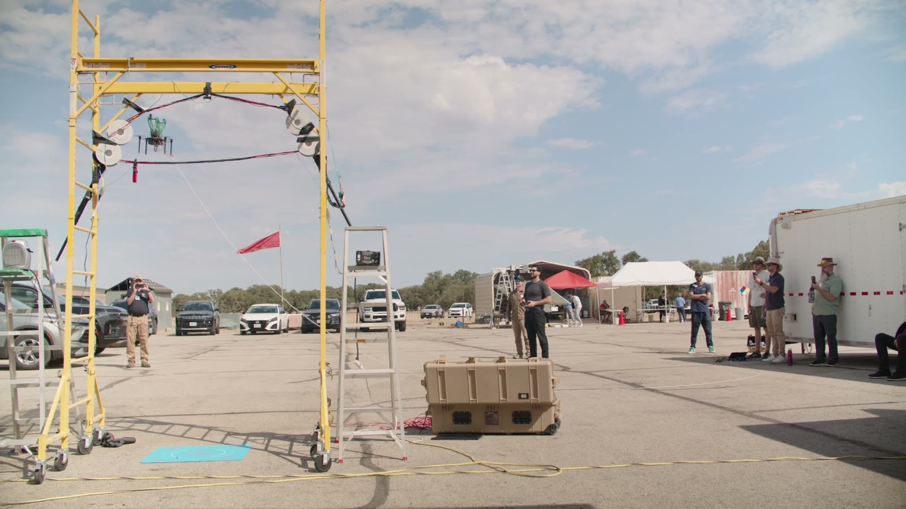
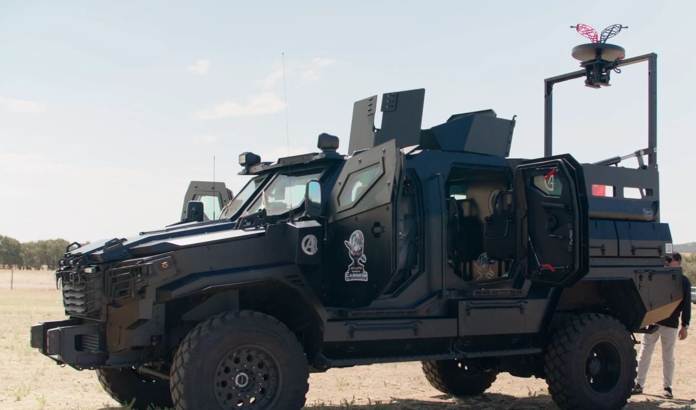
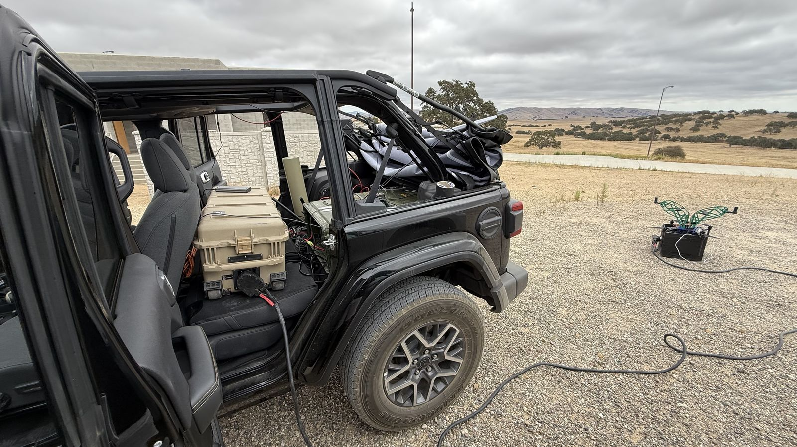
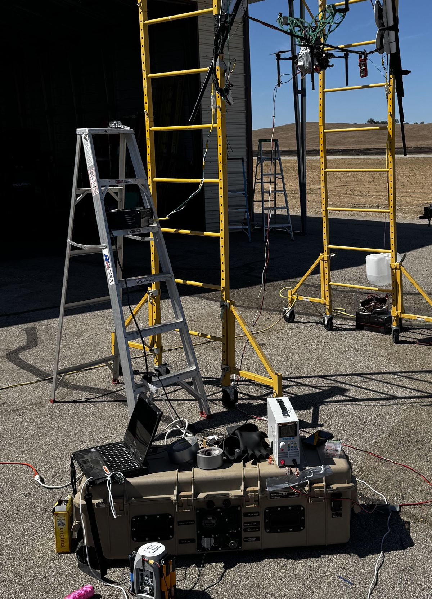
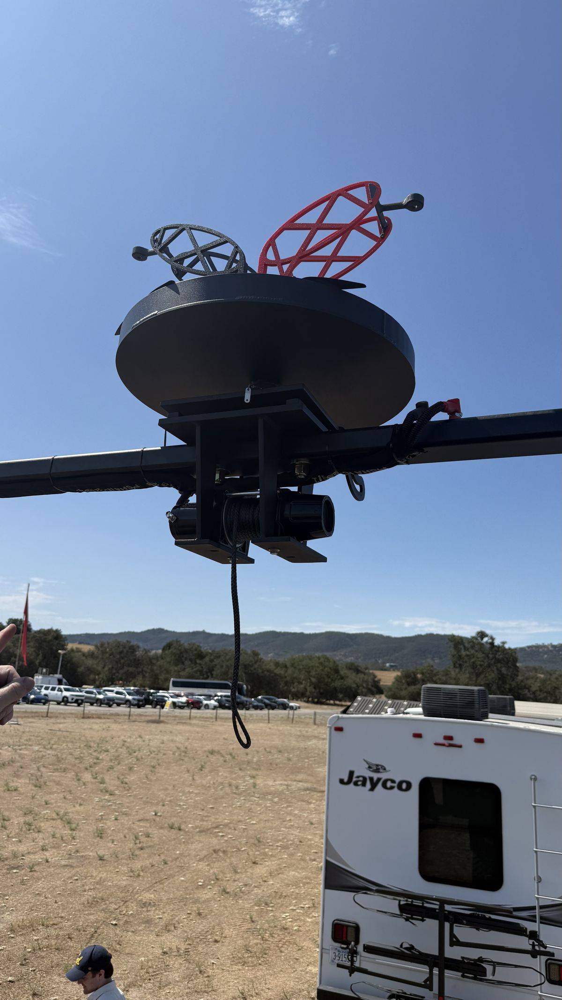
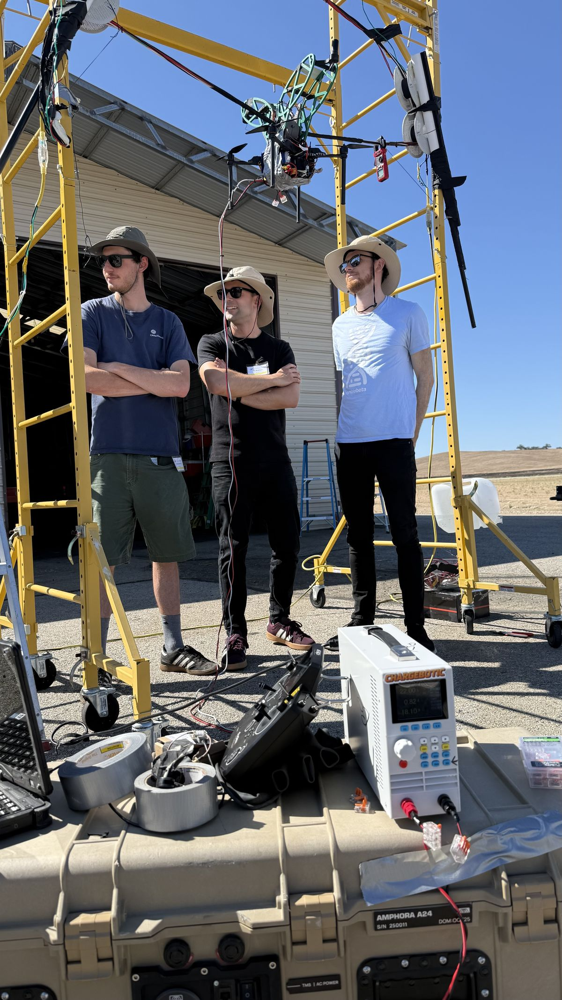
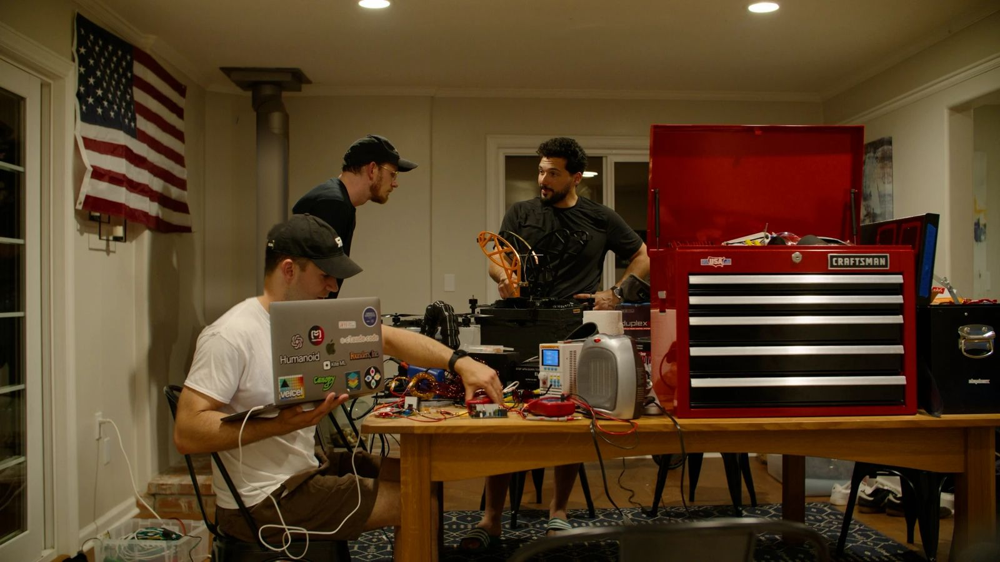

Kestrel lands on an overhead line, harvests its energy without contact and sends power down to your unit on the ground.
Fuel convoys. Generators that are loud, hot and visible. Batteries that run flat, and new equipment that sits idle without power.
Meanwhile, live power lines already cross the terrain. Kestrel turns them into a power source for the unit below. It works alongside your generators and solar. It does not replace them.
Draw power from infrastructure already in the area instead of moving fuel to it. Fewer convoys on the road, fewer lives at risk.
Once perched, the motors shut down. No running generator, less noise and less heat for an adversary to find.
Radios, sensors and recharging stay up for as long as the line is live. One operator sets it up in minutes.



One operator opens the ground station and launches Kestrel on its tether.
The aircraft lands on the conductor. Piloted today, with assisted perching in development.
Magline, our induction harvester, turns the magnetic field around the line into power.
Energy flows down the tether to your batteries and equipment.
No electrical contact. Nothing is cut, spliced or wired to the line.

JIFX, Camp Roberts, California, hosted by the Naval Postgraduate School. Kestrel recharged a battery from an energized test line and powered a satellite terminal, a camera and radios.
Perch on an in-service power line and deliver power to real equipment.
Trials with units and partners in field exercises.


Our background. Our founders deployed electric charging networks and engineered hardware at Apple and Meta. Now we bring that to the field.
From idea to a military base in 90 days. We designed and built Kestrel, flew it at JIFX on Camp Roberts and signed our first paid contract with a defense company.
Our vision. Power is a combat requirement. Keep the radios up and the unit connected, without sending soldiers down the road for fuel.
For units, government programs, integrators and press. We respond within 24 hours.